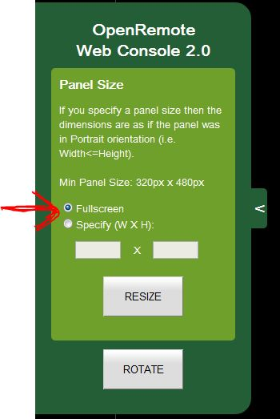

As a new user the UI designer is a bit counter intuitive for me. I could not fing a manual on the site, so here go my questions:
1) At the top of the UI editor page there is a series of buttons that seem to serve alignment of the layout. I have no clue wat they do. When pushed nothing seems to happen. There are also no tooltips indicating a possible function.
2) In my UI design I added grids afterwards. I dragged the existing elements on the sreen into the cells. Then I noticed that the screen had no data. It appeared that in the drag operation all the previously selected sensors had disappeared.
3) I defined my first panel as a WEB console of 1024*800 dots. I had hoped thqat this would give me an almost full screen in the WEBconsole, just as I had seen on some of the fancy movies on site about an office space. However I only got some dull mimiced phone layout to look at. It also did not have my specified dimensions. Afterwards I couyld not changed that dimensions in the panel either. The only solution seems to throw away the panel.
Is it possible to make a big screen, and if so where can I find instructions/samples?
4) A couple of times with the labels I had selected a sensor by mistake. Unfortunately the designer does not allow to change to an empty field there.
Thank you for your attention
{kind=link}
|
Thanks for reporting this, always interested in how to improve the designer (even though I already have a ton of ideas but not enough time to implement them all at this stage). 1) There will be tooltips in a future version, it did not make it to 2.13.x for some technical reason Some of those buttons only work with multiple items selected (which you can do by clicking on the different items while holding shift, dragging a 'lasso' around multiple elements is on the todo list), those will be disabled if you only select 1 item.
2)I did reproduce it, it's a bug and I logged that in our issue tracking system. 3) Don't know much about the web console, but will look at possibility to resize panels in the designer, makes sense. 4) In my TODO list, along with possibility to remove commands from buttons, ... |
|
Eric, |
|
Anyone else who can explain to me how to make a WEB console of 1024*800 dots (Item 3 of the first post in this thread? |
|
Been a while since I looked at it, there's a little green menu thing on the left side of the screen that allows you to set the screen dimensions when you open it. Is that not working correctly? |
|
Yes I have tried that little resizer/rotator before, and double checked again just now. If I apply height and width as 1024*800 (as specified in designer, the image rotates counterclockwise, and the grids I used for layout are distorted. (I can send you the screenshots and documentatuion of my system setup via email if that helps). |
|
I'll ping Richard, he's more capable of helping you out with Web Console. |
|
Regarding the WebConsole; are you using the latest version (does it remember your size preferences)? Not sure why your grid layout is being distorted as it should be absolutely sized. Please send me your panel.xml file to richard[at]openremote[dot]org Rich |
|
Thanks for sending me your files and your PDF is very detailed, well done for making the effort. You have two options for sizing in the Web Console using the green pull out on the left hand side: -
From what you have said I believe you want to use the Fullscreen mode but you're wondering why it rotates sideways (this would be to match your screen orientation), when you click the rotate button in fullscreen mode it will load in the opposite orientation of the current screen (if it is defined otherwise it will look like nothing is happening - exactly the same behaviour as you would see on iOS or Android native consoles). Fundamentally you need to define a landscape version of your screen(s) so that the content will not appear 'sideways'. As for your layouts becoming distorted, I do not see this behaviour; I have checked with firebug and everything matches your panel.xml sizes no matter what console size setting I use. Hope this answers your issue(s). Rich |
|
Thanks for looking into this Richard. Your post was helpful for pointing me to the landscape mode in the editor |
|
Please see attached image, check the 'Fullscreen' checkbox and then click RESIZE button: - Rich  |
|
Ah, one image tells more than thousand words. I apparantly have a different (older) version of WEB console, which does not have the two options. I'll have to see where things have gone wrong. I remember that some weeks (may be even more) I did replace my controller installation with an early 2.0.1 release. Edit: I have taken a deeper look into my system. The Webconsole is located on D:\OpenRemote-Controller-2.0.1\webapps\webconsole. The files there are dated 2012-03-10. I did check both the experimental 2.0.1 package I got from Marcus, and the official 2.0.0 Webconsole package as it is today on the site. Both ZIP files do not have the webconsole branch. So where can we find the WEBconsole package now? Pieter |
|
Hi Pieter, It seems that the latest Web Console hasn't been added to the controller download which I'm trying to sort out with Juha at the moment, I'm not at home and don't have the tools here to send you a copy but in the meantime you're free to try it out from my home server (you won't be able to search for controllers as the web console is running inside my LAN and discovery only works for current LAN): - http://multimation.co.uk/webconsole2 Rich |
|
The link does not work for me, but don't worry I can wait. The problem seems to be under control, so I will see next week. |
|
Apologies: - http://multimation.co.uk:8080/webconsole2 |
|
Even with the download of http://multimation.co.uk:8080/controller/webconsole.war as you suggested in an other space, I still do not get the full screen sizing option. So I gues I have to wait till Juha has updated the controller package with a complete new webconsole directory branch |
|
Apologies Pieter, I've now made sure it's the latest version so please download again, once deployed make sure you fully refresh your browser (Ctrl+F5). |
|
Got it working using 7ZIP to extract it to ./webconsole. Thanks |
|
Glad to hear! P.S. You don't need to unzip the war file, you can just put it in the webapps folder and Tomcat will automatically deploy it for you. |
|
That's what I thought, but in my case Tomcat apparantly did not do it. So I did it manually this morning. (I do have developer version 2.0.1 of controller). I did a complete new install this morning to check if the installation procedure I am writing is correct. |
|
That's strange...at least you got it working though. Just to let you know, I've created a windows installer for OpenRemote that requires no configuration and adds an entry to the start menu so makes it simpler. |
|
I have a new question about the UI designer element slider
Is this a shortcoming of Webconsole, or isn't the display of those images implemented yet?
|
|
Hi Pieter, Regarding the slider control in the web console; you are right in noting that it does not have the same functionality as the one shown in the Designer. The designer widgets are all generated using the Sencha GWT library where as in the Web Console everything was written from the ground up and I just haven't got round to adding all the same functionality. It is on the list of things to do. Rich |
|
Good evening Richard, |